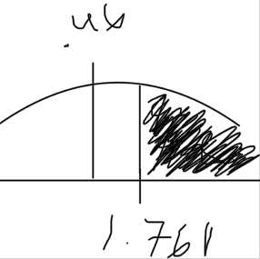

Hypothesis testing is trying to find out if a statement is true (faliure to reject null) or false (null rejected).
I want to say that 60% people that run Microsoft Windows on their computers are more technical and would repair their own computers

According to the data, 7 people out of 15 people who run Microsoft Windows prefer to fix their own computers, to fall in the null, we need 1.761 but we fall short at .46, in which case it falls outside the null and gets rejected.